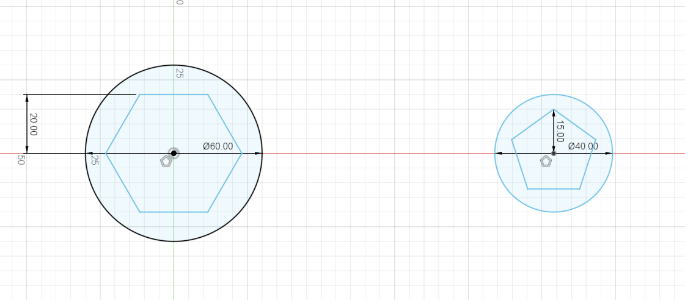
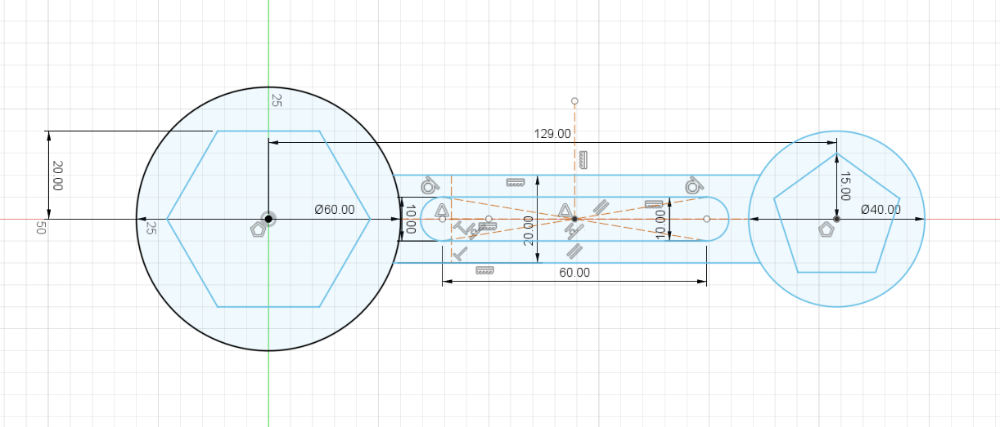
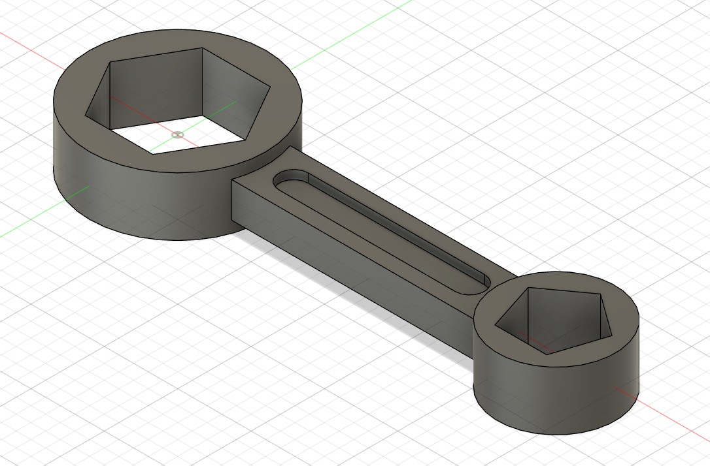

For our second exercise, we were tasked to sketch the above spanner which an inclusion of extrusion. I start off by drawing a circle of radius 30mm on the origin and another circle 129mm away from the midpoint of the first circle, with the radius of 20mm. On the x-axis, i drew a construction line connecting the midpoints. I then drew two verticle lines up from the two circle midpoints which can help me draw my ploygon in the centre circles with radius of 20mm and 15mm respectively.
Next i drew two horizontal lines which connects the two circles and mirror it based on the x-axis. After doing that, I drew a rectangle inside the two lines with a dimension of 70mmx10mm. At the ends i drew circles with a diameter of 10. I then trimmed it to give its shape. I then mirrored the rectangle againt the same construction line so the the sides are equal.
Once that is done, I extruded the two circles excluding the polygons, by 10mm on both sides. For the middle piece, i extruded it by 6mm on both sides and the smaller inner of the middle piece by 3mm. Below is the finished product.
